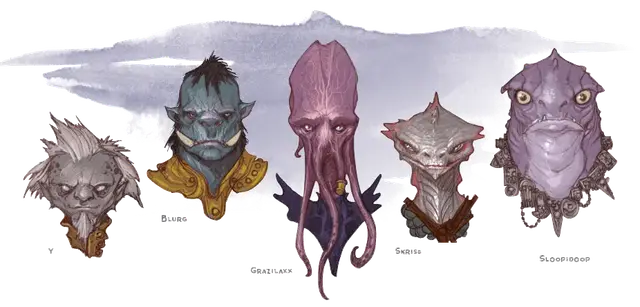

Грэйзилакс
Grazilaxx
Средняя Аберрация, нейтральная, именной НИП

Класс Доспеха 15 (кираса)
Хиты 71 (13к8 + 13)
Скорость 30 футов
| мод | спас | ||
|---|---|---|---|
| СИЛ | 11 | +0 | +0 |
| ЛОВ | 12 | +1 | +1 |
| ТЕЛ | 12 | +1 | +1 |
| мод | спас | ||
|---|---|---|---|
| ИНТ | 18 | +4 | +7 |
| МДР | 17 | +3 | +6 |
| ХАР | 17 | +3 | +6 |
Навыки Восприятие +6, Магия +7, Обман +6, Проницательность +6, Скрытность +4, Убеждение +6
Чувства тёмное зрение 120 футов, пассивное Восприятие 16
Языки Глубинная речь, Дварфийский, Подземный, Эльфийский, Телепатия 120 фт.
Опасность 7 (2900 опыта)
Бонус мастерства +3
Особенности
Сопротивление магии. Грэйзилакс совершает с преимуществом спасброски от заклинаний и прочих магических эффектов.
Врождённое колдовство (псионика). Базовой характеристикой Грэйзилакса является Интеллект (Сл спасброска от заклинания 15). Он может накладывать следующие заклинания, не нуждаясь ни в каких компонентах:
• Неограниченно: левитация [levitate], обнаружение мыслей [detect thoughts];
• 1/день каждое: подчинение чудовища [dominate monster], уход в иной мир [plane shift] (только на себя).
Телепортация (1/день). Каждый член общества способен накладывать заклинание телепортация [teleport], однако точка назначения должна быть в радиусе 30 футов от другого члена общества. Эффект этой телепортации может быть нарушен (см. «Фэрзресс» во 2-й главе), из-за чего порой члены общества попадают в далекие уголки Подземья, вдали от своих соратников.
Действия
Щупальца. Рукопашная атака оружием: +7 к попаданию, досягаемость 5 футов, одно существо. Попадание: Урон психической энергией 15 (2к10 + 4). Если размер цели не больше Среднего, она становится схваченной (Сл высвобождения равна 15) и должна преуспеть в спасброске Интеллекта Сл 15, иначе станет ошеломленной, пока не перестанет быть схваченной.
Извлечение мозга. Рукопашная атака оружием: +7 к попаданию, досягаемость 5 футов, один недееспособный гуманоид, схваченный свежевателем разума. Попадание: Цель получает колющий урон 55 (10к10). Если этот урон уменьшает хиты цели до 0, свежеватель разума убивает цель, извлекая и пожирая её мозг.
Взрыв сознания (перезарядка 5–6). Свежеватель разума магическим образом испускает психическую энергию 60-футовым конусом. Все существа в этой области должны преуспеть в спасброске Интеллекта Сл 15, иначе получат урон психической энергией 22 (4к8 + 4) и станут ошеломленными на 1 минуту. Существо может повторять этот спасбросок в конце каждого своего хода, оканчивая эффект на себе при успехе.
Описание
Свежеватели разума, также называемые иллитидами, — настоящее бедствие для разумных существ бесчисленного множества миров. Это псионические мучители, работорговцы и межпространственные скитальцы. Эти коварные манипуляторы могут уничтожать целые расы ради своих извращенных целей. Четыре щупальца отходят от напоминающей осьминога голову, извиваясь в предвкушении трапезы, когда рядом есть разумное существо.
Тысячелетия назад иллитиды контролировали империи, которые простирались на множество миров. Они подчинили и исказили целые расы человекоподобных рабов, включая гитъянок и гитцераев, гримлоков и куо-тоа. Обладающие коллективным сознанием иллитиды строят настолько далеко идущие планы, насколько их непостижимые умы могут задумать.
После падения этих империй общества иллитидов Материального Плана обосновались в Подземье.
Псионические приказы. Свежеватели разума владеют псионической энергией в такой степени, что могут контролировать разумы существ, таких как троглодиты, гримлоки, квагготы и огры. Иллитиды предпочитают общаться посредством телепатии и используют телепатию для отдачи команд своим рабам.
Когда иллитид встречает сильное сопротивление, он пытается избежать боя, например, приказывая своим рабам атаковать. Словно физические продолжения мыслей иллитида, эти рабы вклиниваются между свежевателем разума и его врагами, жертвуя своими жизнями, чтобы их хозяин мог спастись.
Поселения коллективного разума. Одинокие свежеватели разума вероятнее всего являются бродягами или изгоями. Большинство иллитидов принадлежит к колонии свежевателей разума, преданных старшему мозгу — огромному похожему на мозг существу, которое находится в соленом бассейне вблизи центра поселения свежевателей разума. Из этого бассейна старший мозг телепатически диктует свои желания каждому отдельному свежевателю разума на расстоянии до 5 миль и способен одновременно поддерживать несколько мысленных бесед.
Голод разума. Иллитиды существуют, питаясь мозгами гуманоидов. Мозги обеспечивают их энзимами, гормонами и психической энергией, необходимой для выживания. Здоровый иллитид на богатой мозгами диете выделяет тонкий слой слизи, который покрывает его светло-фиолетовую кожу.
Иллитид испытывает эйфорию, пожирая мозг гуманоида вместе с его воспоминаниями, его личностью, его внутренними страхами. Иногда они просто вынимают мозг, вместо того, чтобы съесть, и в дальнейшем используют его в своих странных экспериментах, или трансформируют его в пожирателя интеллекта.
Квалит
В тех редких случаях, когда свежевателю разума надо что-то записать, он пользуется квалитом. Это система тактильного письма (как шрифутов. Брайля), и читается она с помощью щупалец. Текст на квалите записывается четырехстрочными строфами. Его конструкция настолько чужда другим существам, что им приходится прибегать к магии, чтобы понять смысл записанного. Квалит можно использовать для ведения записей, но гораздо чаще иллитиды его используют для того, чтобы написать предостережение или инструкцию на порталах или других важных объектах.